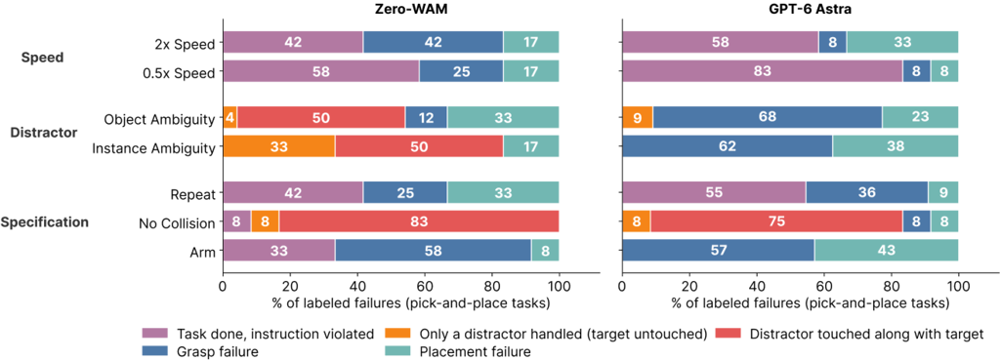

DemoShift‑Bench Are In‑Context Learning Robot Policies Ready Beyond Curated Demonstrations?
Evaluate ICL Policies & Frontier VLMs on real-world human demonstration (Abstract)
In-context learning (ICL) enables robot policies to perform unseen tasks from a human demonstration video without task-specific training. However, existing evaluations rely on curated videos closely matched to the robot's workspace. We ask whether these policies can follow casual, everyday recordings and adapt to changed execution conditions. To this end, we introduce DemoShift-Bench, which pairs real human recordings with manipulation tasks and applies controlled shifts along five axes: camera viewpoint (top-view, third-person, and handheld), execution speed (2× or 0.5×), distractors in the demonstration or scene, specification (repetition, collision avoidance, or arm selection), and cross-modal conflicts between video and text. Evaluating both ICL policies and frontier agentic vision-language model (VLM) policies on DemoShift-Bench reveals an average success drop of 12–14 percentage points under shifts and exposes three key limitations.
Demonstration Shifts. (Section 3.3)
5 controlled shift axes in DemoShift-Bench (Section 3.3, Figure 2)
The camera rarely matches the robot’s view.
The same demonstration is re-recorded from a top view, a close or distant third-person view, and a moving handheld camera.
Main Findings. (Section 4)
Evaluating both ICL policies and frontier agentic vision-language model (VLM) policies on DemoShift-Bench reveals an average success drop of 12–14 percentage points under shifts and exposes three key limitations.
- First, earlier video-conditioned vision-language-action (VLA) policies rely mainly on text instructions rather than on human demonstration videos. (Section 4.2)
- Second, current ICL policies that do use the video still fail to reproduce demonstrated actions precisely, resolve object and instance ambiguity, or follow added specifications and cross-modal overrides. (Section 4.3)
- Third, frontier agentic VLM policies handle visual shifts, arm selection, and cross-modal conflicts far more reliably, yet they still fail to repeat tasks, avoid collisions, or adjust execution speed, and they incur high token costs. (Section 4.4)
Performance Drop under Different Axes. (Section 4.1, Table 4)
Human Demo
Conflictmean of 2 conditions
| ICL policies | Agentic VLM policies | ||||
|---|---|---|---|---|---|
| Axis | Condition | Zero‑WAM | WorldScape+Caption | GPT‑6 Astra | Claude Opus 5.5 |
| Reference | Human Demo (V0, c0, E0) | 39.9±5.1 | 36.2±6.5 | 67.1±11.0 | 68.6±10.9 |
| Viewpoint | Top-View | 44.0±5.2 +4.1 | 38.1±6.6 +1.9 | 77.1±9.8 +10.0 | 74.3±10.2 +5.7 |
| Close 3rd-Person | 35.7±5.0 −4.2 | 30.5±6.2 −5.7 | 72.9±10.4 +5.8 | 62.9±11.3 −5.7 | |
| Distant 3rd-Person | 36.6±5.0 −3.3 | 43.8±6.7 +7.6 | 68.6±10.9 +1.5 | 75.7±10.0 +7.1 | |
| Handheld Moving | 34.3±5.0 −5.6 | 38.1±6.6 +1.9 | 62.9±11.3 −4.2 | 67.1±11.0 −1.5 | |
| Speed | 2x Speed Instruction | 4.9±2.3 −35.0 | 17.1±5.1 −19.1 | 44.3±11.6 −22.8 | 34.3±11.1 −34.3 |
| 0.5x Speed Instruction | 10.9±3.3 −29.0 | 8.1±3.7 −28.1 | 20.0±9.4 −47.1 | 18.6±9.1 −50.0 | |
| Distractor | In Demo | 36.0±5.0 −3.9 | 35.2±6.5 −1.0 | 61.4±11.4 −5.7 | 70.0±10.7 +1.4 |
| Object Ambiguity (Seen) | 30.9±4.8 −9.0 | 28.1±6.1 −8.1 | 64.3±11.2 −2.8 | 70.0±10.7 +1.4 | |
| Object Ambiguity (Unseen) | 32.6±4.9 −7.3 | 30.0±6.2 −6.2 | 60.0±11.5 −7.1 | 62.9±11.3 −5.7 | |
| Instance Ambiguity | 19.4±4.1 −20.5 | 10.0±4.1 −26.2 | 52.9±11.7 −14.2 | 70.0±10.7 +1.4 | |
| Specification | Repeat | 2.9±1.8 −37.0 | 0.0±1.8 −36.2 | 28.6±10.6 −38.5 | 42.9±11.6 −25.7 |
| No Collision | 10.0±3.1 −29.9 | 1.0±1.3 −35.2 | 8.6±6.6 −58.5 | 12.9±7.9 −55.7 | |
| Arm | 32.3±4.9 −7.6 | 29.5±6.2 −6.7 | 70.0±10.7 +2.9 | 64.3±11.2 −4.3 | |
| Cross-Modal Conflict | Random Video | 23.1±4.4 −16.8 | – | 65.7±11.1 −1.4 | 62.9±11.3 −5.7 |
| Random Instruction | 41.7±5.2 +1.8 | – | 70.0±10.7 +2.9 | 64.3±11.2 −4.3 | |
For ICL policies: Viewpoint shifts hurt when they occlude the target, as do distractors in the robot's scene. Speed and specification instructions are rarely followed. Under cross-modal conflicts, Zero‑WAM follows only the video. (Section 4.3)
For agentic policies: Viewpoint shifts, conflicts, and arm specifications barely hurt agentic policies. Yet they still fail under Speed, Repeat, and No Collision. This robustness is costly. (Section 4.4)
Failure Cases Analysis. (Section 4.5, Appendix A)
Policies do not use the affordance the demonstration shows. Even when a rollout succeeds, it often ignores how the human interacts with the object. In the open-microwave task on the right, the demonstrator grasps the handle and pulls the door; Zero‑WAM instead hooks its gripper over the top edge of the door and drags it open. (Section 4.5, Figure 5)
Target confusion and ignored requests cause failures. With distractors added to the scene (Object ambiguity), the robot grasps the phone instead of the stamp: it knows to pick something up, but not which object the demonstration specifies, consistent with the 6.2–9.0 percentage-point drop under Object Ambiguity. Told not to touch other objects (Collision), the robot places the cup on the coaster but knocks the can off the table on the way, executing what the demonstration shows and ignoring the added specification. (Section 4.5, Figure 4)
